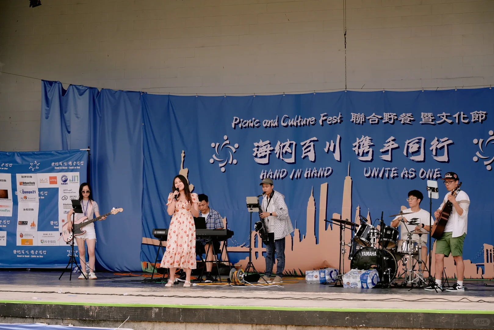
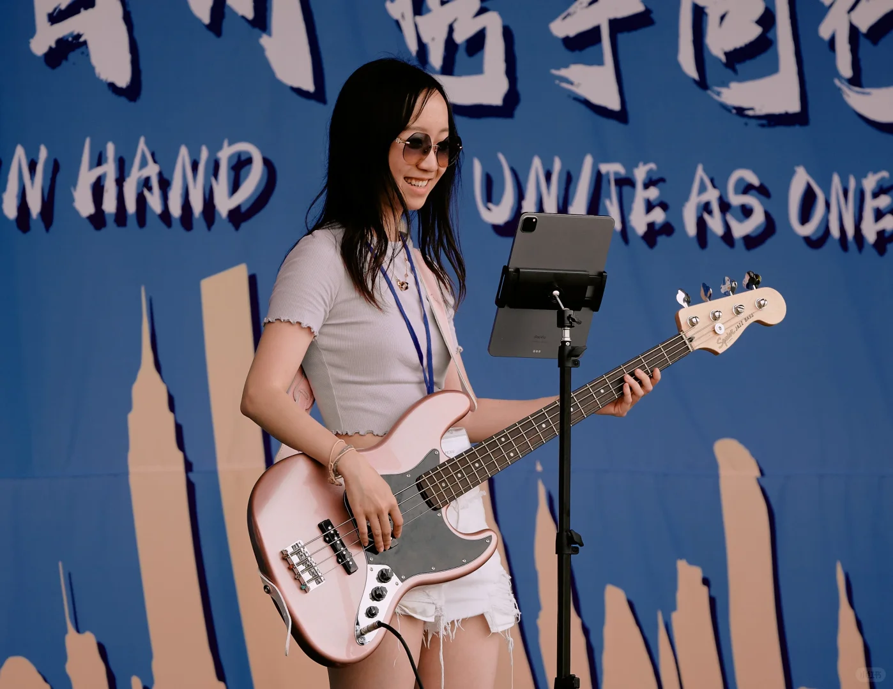
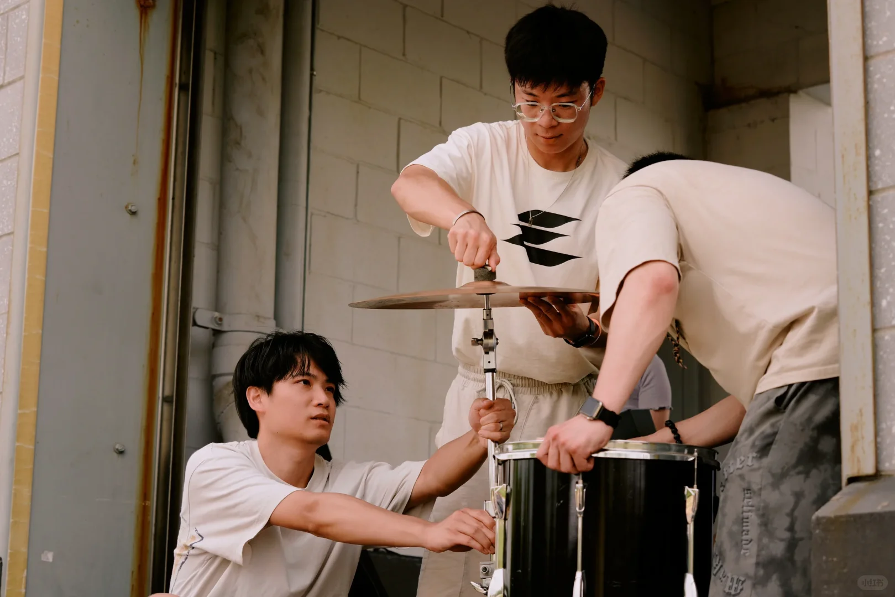
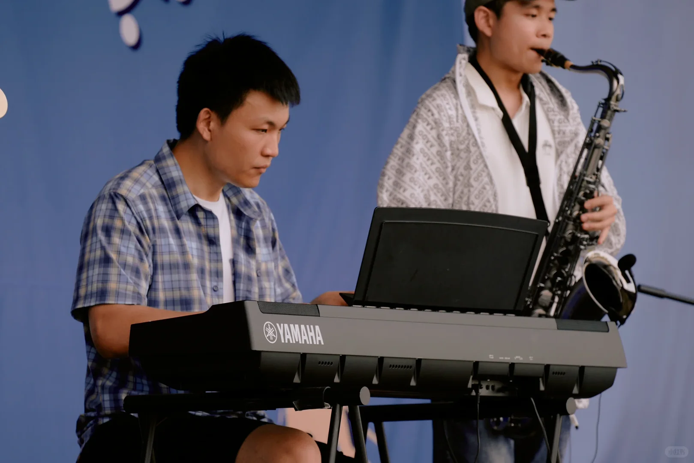

影像
演出、录像和排练时留下来的照片和视频。
夏日的微风清甜，拂过露天的舞台间
阳光、草地和音乐，2024 夏日公园演出的片刻。








走向小镇的街边，唤醒慵懒的咖啡店
2024 年夏天，在新泽西 Highland Park 的 Penstock Coffee 录下的两支视频：一首早期翻唱，和乐队的首个 Live Video Cover。
首个 Live Video Cover
地点在新泽西 Highland Park 的 Penstock Coffee。歌曲是王若琳的《亲密爱人》。一支刚组建不久的新泽西工作党乐队，以爵士翻唱为主，也想试试别的风格，并把这份原声现场留下来。
小红书原帖 ↗家庭录音室
没有舞台灯光的地方，才是一首歌开始的地方。
这里收集了乐队在家庭录音室排练和录音时拍下的照片。